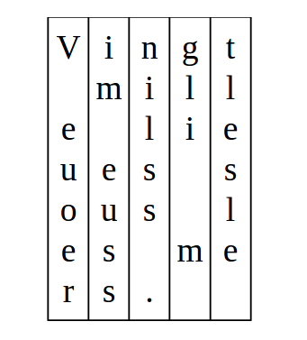
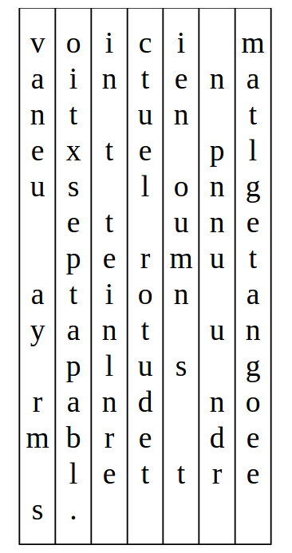
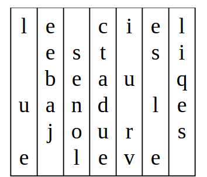

Mettez les colonnes dans le bon ordre pour retrouver le message secret.
Le texte se lit horizontalement. Attention, certains mots seront à cheval sur plusieurs lignes et les lettres sont toutes en minuscules et sans les accents.
On repère la majuscule 'V' et on la met au début. Comme en français aucun mot ne commence par 'Vn', 'Vg' ou 'Vt', la lettre suivante est nécessairement le 'i'. On peut aussi repérer que sur la dernière ligne, le point doit être collé au mot. Donc la colonne suivante est celle du 'n'. Cela suffit pour reconnaître "Vingt".

On peut commencer par la dernière ligne : elle doit nécessairement commencer par le "s", suivi du point. On peut alors chercher un mot qui commence par "Vo" sur la première ligne. On reconnaît le mot "Voici". On peut aussi reconnaître le mot "maintenant" sans sa première lettre, sur la seconde ligne. La suite est facile.

Dans cette version, on ne dispose pas de majuscule ou de point pour s'aider. Il faut donc essayer de former des mots avec les lettres disponibles, un peu comme au Scrabble.
On se concentre sur le premier mot, le seul dont on peut placer le début avec certitude. On cherche les mots qui peuvent être formés avec les lettres disponibles. On peut supposer qu'il y a deux mots, et penser à "le", "ce" ou "il" comme mots possibles pour commencer une phrase avec les lettres disponibles.
Il nous reste respectivement "icel", "iell" et "ecel" pour former soit un deuxième mot soit début d'un deuxième mot. On peut alors trouver que le mot "ciel" peut être formé, donnant "le ciel" comme première ligne.
Les lignes suivantes ne semblent cependant pas lisibles, à moins d'avoir de la chance. Il y a en effet plusieurs manières d'écrire "le ciel" car on a deux 'e' et deux 'l'. On peut donc essayer d'échanger les deux 'e', les deux 'l', ou bien les deux à la fois On finit par obtenir :

Cette méthode de chiffrement, appelée chiffrement par transposition, consiste à changer l'ordre des lettres dans le message. On peut l'utiliser seule ou combinée avec d'autres techniques de chiffrement.
Exemple : Lors de la Première guerre mondiale, les Allemands ont chiffré leurs transmissions par la méthode ADFGVX qui utilise, entre autres, le chiffrement par transposition.